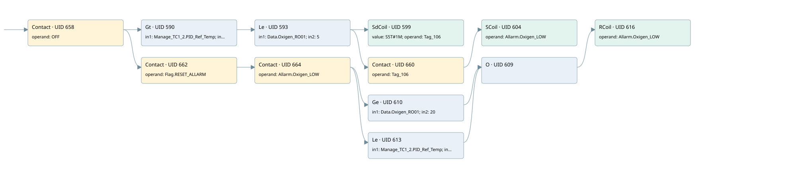

ro01 oxigen low limit
allarms 3 · 검색 색인 순서 6 · 원본 내부 NID 추정 6
백업 PLF 원본의 3170627 바이트 위치에서 복원한 XML. 검색 문서 1984의 객체 키 16102200766b000000000000와 연결했다. 이름 해석 16/16개. 남은 RefId는 상수 또는 미해석 참조다.
연결 구조 다시 그리기
원본 Part/PCon/Wire를 이용한 연결도다. TIA 화면의 래더 배치 또는 실행 결과를 재현한 그림은 아니다. 핀 연결은 아래 표와 원본 XML을 기준으로 읽는다. 노드 위에 마우스를 두면 피연산자 이름을 볼 수 있다.

접점·코일·블록과 피연산자
| Part UID | Gate | Negated 핀 | 연결 피연산자 |
|---|---|---|---|
| 658 | Contact | operand = OFF | |
| 590 | Gt | in1 = Manage_TC1_2.PID_Ref_Temp; in2 = 650.0 | |
| 593 | Le | in1 = Data.Oxigen_RO01; in2 = 5 | |
| 599 | SdCoil | value = S5T#1M; operand = Tag_106 | |
| 660 | Contact | operand = Tag_106 | |
| 604 | SCoil | operand = Allarm.Oxigen_LOW | |
| 662 | Contact | operand = Flag.RESET_ALLARM | |
| 664 | Contact | operand = Allarm.Oxigen_LOW | |
| 610 | Ge | in1 = Data.Oxigen_RO01; in2 = 20 | |
| 613 | Le | in1 = Manage_TC1_2.PID_Ref_Temp; in2 = 650.0 | |
| 609 | O | ||
| 616 | RCoil | operand = Allarm.Oxigen_LOW |
접점 경로를 펼친 조건식
Contact·O/A·비교기의 원본 연결을 읽기 쉽게 펼친 보조 해석이다. POWER는 전원 레일 시작을 뜻한다. 호출 블록·에지·타이머의 내부 동작과 다중 쓰기 순서는 이 표로 실행 검증하지 않았다. 미해석 핀과 RefId는 원문 연결표에서 확인한다.
| UID | 동작 | 대상 | 원본 접점 경로 | 내용 |
|---|---|---|---|---|
| 599 | SdCoil | Tag_106 | ((OFF AND [Manage_TC1_2.PID_Ref_Temp > 650.0]) AND [Data.Oxigen_RO01 <= 5]) | 시간 동작 SdCoil; 타이머 의미 추가 확인 / 시간 인자 S5T#1M |
| 604 | SCoil | Allarm.Oxigen_LOW | (((OFF AND [Manage_TC1_2.PID_Ref_Temp > 650.0]) AND [Data.Oxigen_RO01 <= 5]) AND Tag_106) | 조건 성립 시 Set |
| 616 | RCoil | Allarm.Oxigen_LOW | ((((OFF AND Flag.RESET_ALLARM) AND Allarm.Oxigen_LOW) AND [Data.Oxigen_RO01 >= 20]) OR (((OFF AND Flag.RESET_ALLARM) AND Allarm.Oxigen_LOW) AND [Manage_TC1_2.PID_Ref_Temp <= 650.0])) | 조건 성립 시 Reset |
원본 배선 연결
| Wire UID | 동일 Wire 연결 끝점 |
|---|---|
| 666 | Powerrail {} ↔ Part 658.in |
| 633 | ORef 617 (OFF) ↔ Part 658.operand |
| 659 | Part 658.out ↔ Part 590.pre ↔ Part 662.in |
| 634 | ORef 618 (Manage_TC1_2.PID_Ref_Temp) ↔ Part 590.in1 |
| 635 | ORef 619 (650.0) ↔ Part 590.in2 |
| 636 | Part 590.out ↔ Part 593.pre |
| 637 | ORef 620 (Data.Oxigen_RO01) ↔ Part 593.in1 |
| 638 | ORef 621 (5) ↔ Part 593.in2 |
| 639 | Part 593.out ↔ Part 599.in ↔ Part 660.in |
| 640 | ORef 622 (S5T#1M) ↔ Part 599.value |
| 641 | ORef 623 (Tag_106) ↔ Part 599.operand |
| 642 | ORef 624 (Tag_106) ↔ Part 660.operand |
| 661 | Part 660.out ↔ Part 604.in |
| 644 | ORef 625 (Allarm.Oxigen_LOW) ↔ Part 604.operand |
| 646 | ORef 626 (Flag.RESET_ALLARM) ↔ Part 662.operand |
| 663 | Part 662.out ↔ Part 664.in |
| 647 | ORef 627 (Allarm.Oxigen_LOW) ↔ Part 664.operand |
| 665 | Part 664.out ↔ Part 610.pre ↔ Part 613.pre |
| 648 | ORef 628 (Data.Oxigen_RO01) ↔ Part 610.in1 |
| 649 | ORef 629 (20) ↔ Part 610.in2 |
| 650 | Part 610.out ↔ Part 609.in1 |
| 651 | ORef 630 (Manage_TC1_2.PID_Ref_Temp) ↔ Part 613.in1 |
| 652 | ORef 631 (650.0) ↔ Part 613.in2 |
| 653 | Part 613.out ↔ Part 609.in2 |
| 654 | Part 609.out ↔ Part 616.in |
| 656 | ORef 632 (Allarm.Oxigen_LOW) ↔ Part 616.operand |
식별자 해석 근거 16개
| ORef UID | RefId | 이름 | IdentXmlPart 파일 | 해석 방법 |
|---|---|---|---|---|
| 617 | 176 | OFF | 0686-IdentXmlPart.xml | UID/RID + search-text + NID agreement |
| 618 | 169 | Manage_TC1_2.PID_Ref_Temp | 0684-IdentXmlPart.xml | UID/RID + search-text + NID agreement |
| 619 | 173 | 650.0 | 0683-IdentXmlPart.xml | literal candidate: UID/RID/NID + nearby named declarations + search-text agreement |
| 620 | 52 | Data.Oxigen_RO01 | 0684-IdentXmlPart.xml | UID/RID + search-text + NID agreement |
| 621 | 13 | 5 | 0683-IdentXmlPart.xml | literal candidate: UID/RID/NID + nearby named declarations + search-text agreement |
| 623 | 63 | Tag_106 | 0686-IdentXmlPart.xml | UID/RID + search-text + NID agreement |
| 622 | 46 | S5T#1M | 0683-IdentXmlPart.xml | literal candidate: UID/RID/NID + nearby named declarations + search-text agreement |
| 624 | 63 | Tag_106 | 0686-IdentXmlPart.xml | UID/RID + search-text + NID agreement |
| 625 | 64 | Allarm.Oxigen_LOW | 0684-IdentXmlPart.xml | UID/RID + search-text + NID agreement |
| 626 | 24 | Flag.RESET_ALLARM | 0684-IdentXmlPart.xml | UID/RID + search-text + NID agreement |
| 627 | 64 | Allarm.Oxigen_LOW | 0684-IdentXmlPart.xml | UID/RID + search-text + NID agreement |
| 628 | 52 | Data.Oxigen_RO01 | 0684-IdentXmlPart.xml | UID/RID + search-text + NID agreement |
| 629 | 18 | 20 | 0683-IdentXmlPart.xml | literal candidate: UID/RID/NID + nearby named declarations + search-text agreement |
| 630 | 169 | Manage_TC1_2.PID_Ref_Temp | 0684-IdentXmlPart.xml | UID/RID + search-text + NID agreement |
| 631 | 173 | 650.0 | 0683-IdentXmlPart.xml | literal candidate: UID/RID/NID + nearby named declarations + search-text agreement |
| 632 | 64 | Allarm.Oxigen_LOW | 0684-IdentXmlPart.xml | UID/RID + search-text + NID agreement |
검색 코드 보조 자료
참조 명칭을 찾기 위한 자료이며 실행 순서나 AND/OR 관계는 위 연결표로 확인한다.
"off" "manage_tc1_2".pid_ref_temp 650.0 "data".oxigen_ro01 5 "tag_106" s5t#1m "flag".reset_allarm "allarm".oxigen_low "data".oxigen_ro01 20 "allarm".oxigen_low "manage_tc1_2".pid_ref_temp 650.0 "tag_106" "allarm".oxigen_low